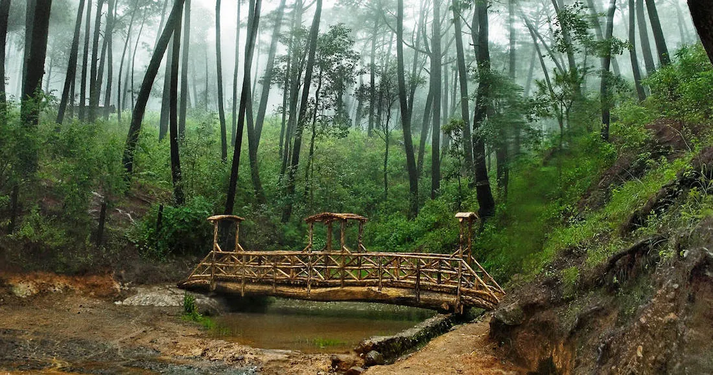
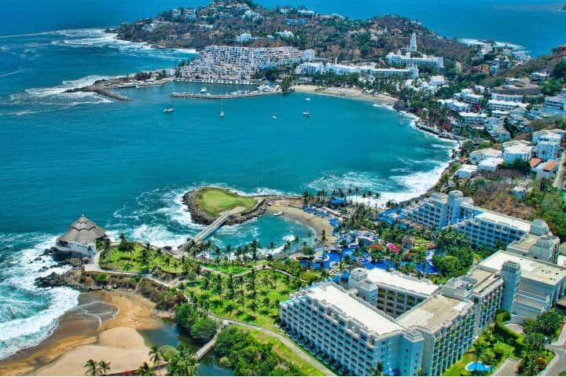
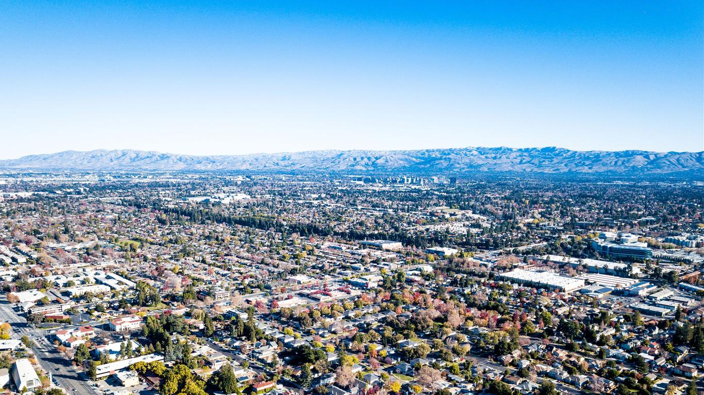

Pueblo Mágico Mazamitla
Jalisco
Mexico

Mazamitla is a municipality and town in the state of Jalisco, Mexico. It is located 124 km south of Guadalajara in the Southeast Region.
Its name comes from the Nahuatl language and means 'Place where arrows are made to hunt deer.'
Facts about Mazamitla
- Province/State
- The Mazamitla province is located in the southwest state, Jalisco.
- Country
- This destination is located in the North American country: Mexico.
- Population
- By the CINEGI in 2020, the population was around the 14,000 habitants.
- Latitude and Longitude
- 19°54′56″N 103°01′10″W

Manzanillo, Colima, Mexico
Manzanillo is a port city on the Pacific Ocean and a tourist center in the Mexican state of Colima.
It has two bays, Manzanillo Bay and Santiago Bay.
Facts about Manzanillo
- Province/State
- The Mazamitla province is located in the southwest state, Colima.
- Country
- This destination is located in the North American country: Mexico.
- Population
- By the CINEGI in 2020, the population was around the 191,000 habitants.
- Latitude and Longitude
- 19°03′12″N 104°18′59″W

Cancún, Yucatán, Mexico
Cancun is a city in Mexico located on the Yucatan Peninsula that borders the Caribbean Sea
and is known for its beaches, numerous resorts, and vibrant nightlife.
It consists of two distinct areas: the more traditional downtown area and the Hotel Zone.
Facts about Cancún
- Province/State
- The Cancún province is located in the southeast state, Yucatán.
- Country
- This destination is located in the North American country: Mexico.
- Population
- By the CINEGI in 2020, the population was around the 900,000 habitants, receiving almost 8 million tourists.
- Latitude and Longitude
- 21°09′41″N 86°49′29″W

Guanjuato, Guanjuato, Mexico
Guanajuato is a city in central Mexico. It is known for its silver mining history and colonial architecture.
Its network of tunnels, passageways, and narrow streets is exemplified by the Callejón del Beso (Alley of the Kiss), named because the balconies are so close that a couple can reach across and kiss.
Facts about Guanajuato
- Province/State
- The Guanajuato province is located in the central state, Guanajuato.
- Country
- This destination is located in the North American country: Mexico.
- Population
- By the CINEGI in 2020, the population was around the 75,000 habitants.
- Latitude and Longitude
- 21°01′04″N 101°15′24″W

San Jose, California, USA
San José is one of the most important cities in the state of California (United States) and is the capital of Santa Clara County.
The city is located in the southern part of the San Francisco Bay Area, within the boundaries of what is known as Silicon Valley.
Facts about San Jose
- Province/State
- San Jose is located in the west coast in the state of California.
- Country
- This destination is located in the North American country: USA.
- Population
- In the last census in 2010, the population was around 1 million habitants.
- Latitude and Longitude
- 37°18′15″N 121°52′22″W